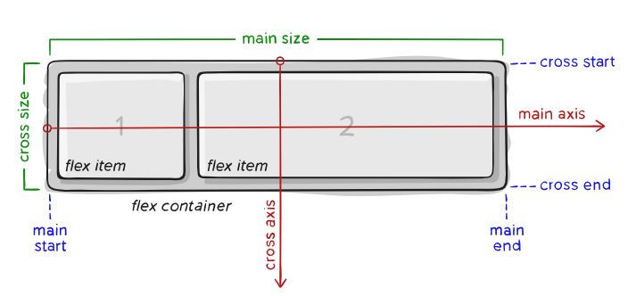
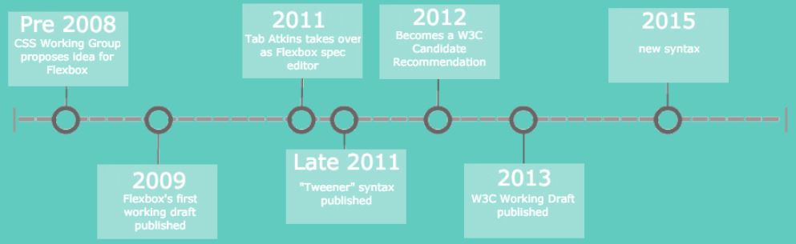
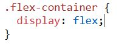
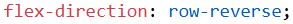
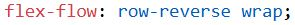
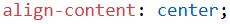
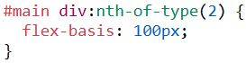

What is Flexbox?
Flexbox is an abbreviation of Flexible Box Layout Module. It is used to arrange items on the web page into rows or columns. Flexbox allows for flexible website layout designs with greater precision than what can be done with methods like float or positioning. Flexbox is designed more for when you need a one-dimensional layout, unlike grid layout which is ment for two-dimensional layouts. Before Flexbox was created, there were four different modes to use in website layouts. Those modes that preceded it were block, inline, table, and positioned.
The reason that flexbox was created was to make a layout that was more efficient in how it aligned and distributed space between the items in its container, especially in cases where the exact size of the items in the container are either unknown or dynamic. Flexbox enables the items inside it to be expanded to fit available free space or shrinks the items to prevent them from overflowing. This is something that was revolutionary when it was released as previous layouts that were used for websites were unable to expand or shrink items like Flexbox can. The Flexbox layout was also revolutionary as all previous layouts for websites had their own inherent direction they were required to go in. This is different from how flexbox works as it's able to organize the items in either a vertical or horizontal orientation, allowing for more design options. Another thing that differentiated flexbox from some of the previous layout models was that it is purely a part of css, which is unlike the older model that flexbox is most like, the block model, which is in both html and css. These many differences are what made flexbox as important to the design of websites that it has become, though the process of its creation is also important to understanding this website layout model.
History of Flexbox
The original idea that flexbox came from was first proposed in 2008 by the CSS Working Group, with the first working draft of it being finished on July 23rd, 2009. The original design was based on technology used by the browser Firefox called XUL, which Firefox used to make their user interface. However the algorithm of the original design was slow and worked differently depending on the implementation. This led to flexbox having its original specifications to be overhauled by Tab Atkins Jr in 2011, who made two different working versions as drafts. The unofficial syntax that he used in these versions got supported by some browsers like Chrome and Internet Explorer 10. The 2012 version of it that he had helped to create was put up for W3C candidate recommendation, which means that the specification was stable, that it was supported by browsers, and that tests are being written for it, with major changes to it being unlikely at this point.The main goal Tab Atkins had in rebuilding how flex works was to get rid of the dependencies that were on everything and were very common at the time.

Tab Atkins went on to rewrite the editor’s draft of it in 2013 to allow it to work better with some new specifications. The changes that he made to flex allowed for it to have an improved algorithm as well as giving the system greater efficiency than it had before. The last draft of flexbox was published in May of 2015 and was put up for review the month after. Finally, the W3C officially added it to the W3C Candidate Recommendations during October of 2017. Flexbox is now an increasingly common part of website development due to how helpful it can be in making a modern design for a website.
Flexbox Parent Properties
Parent properties are properties that affect everything inside the flexbox.
Display
This defines that something is in a flexbox and enables flex content for any children it has. Flexbox can’t be used without setting up the display first.
Flex-Direction
This establishes the direction that the flex will be going through defining the main axis of orientation. It also allows you to have the flexbox go in reverse along the main axis of orientation. The direction is determined by row, row-reverse, column, and column-reverse.
Examples:
Flex-Direction: row;


Flex-Direction: row-reverse;
Flex-Direction: column;
Flex-Wrap
This allows items to wrap around as well as the direction of the wrap. The default setting of Flex-wrap is nowrap, meaning it will try to fit all the content onto one line. The options for this setting are nowrap, wrap, and wrap-reverse.

Flex-Flow
This is a shorthand that combines Flex-direction with Flex-wrap, allowing someone to code both on the same line of code. Flex-Flow uses the key words of row, row-reverse, column, column-reverse, nowrap, wrap, and wrap-reverse.
Justify-Content
This defines how the items will be aligned on the main axis, especially how much space is between items. It also has some amount of control over how items align when they overflow the line. The key words for it are flex-start, flex-end, start, end, left, right, center, space-between, space-around, and space-evenly.

Align-Items
This works like the justify-content of the cross-axis, with it defining what the orientation of items is laid onto the cross-axis. The key words for it are stretch, flex-start, flex-end, center, and baseline. They can also be used with the key words of safe and unsafe.

Align-Content
Aligns items if there is extra space inside the cross-axis through the use of the flex container’s lines. The key words for it are normal, flex-start, flex-end, center, space-between, space-around, space-evenly, and stretch. Like with Align-items, the key words safe and unsafe can be used with the other keywords.
Gap
This controls the gap between the items. It sets the minimum space between two items in the flex container.

Flexbox Child Properties
Unlike with flexbox’s parent properties, child properties in flexbox only affect items within the flexbox that have been specified by the web developer's code.
Order
This controls the order that items are arranged within the flex container. The property values that are used for this property are the number that specifies the order of the item, initial which sets the property to the default, and inherit which causes the item to have the same property as its parent element.

Flex-Grow
This defines how items will grow, with different items able to have different growth rates. The property values that are used for this property are the number that determines the amount the item will grow in comparison to the other items in the flexbox, initial which sets the value of the property to the default value, and inherit which makes the item take the value from its parent element.

Flex-Shrink
Defines how an item is able to shrink. The property values that are used for this property are the number that determines the amount the item will shrink in comparison to the other items, initial which sets the value of the property to the default value, and inherit which makes the item take the value from its parent.

Flex-Basis
Defines the size of an element within the flex container before what space remains is distributed. The property values that are used for this property are the number which sets the initial length of the item in either a length unit or a percent, auto which is the default value, initial which sets the value of the property to the default, and inherit which makes the item take the value from its parent.
Flex
This combines flex-grow, flex-shrink, and flex-basis into one. The property values that are used are the same ones that are used for flex-grow, flex-shrink, and flex-basis.

Align-Self
Allows for the default alignment to be overhauled for a specific item in the flex container. The property values that are used for this are auto, stretch, center, flex-start, flex-end, baseline, initial, and inherit.